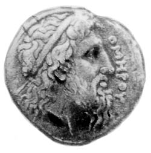

До 2677 р. з дня народження нашого земляка Гомера!
Рис. 1.
{kind=link}
Зображення цієї монети (Рис. 1) надано в книзі Германа Хафнера [1]. з наступним написом: «Ідеальний зевсоподібний профіль Гомера зображений на монеті з Хіосу, яка відноситься до IV ст. до н.е.». Це вся інформація, ні яких посилань на те звідки вона запозичена немає. У передмові зауважено, що напевно прижиттєвих портретів Гомера не існувало через його бродячий образ життя. Звертаю увагу, що всі монети, як правило, публікуються з аверсом і реверсом, а тут ми маємо лише аверс, що дає підстави вважати цю монету значно древнішою означеного IV ст. до н.е., бо найраніші монети не мали ще реверсу. Можливо на реверсі монети було написано слово «Χίος» і це дало привід вважати, що вона з о. Хіос.
{kind=link}
Рис. 2
В статтях, які є здобутком нової науки апокрифології [2-5] мною доведено, що в центрі композиції золотої скіфської пекторалі зображений автором ліворуч Гомер, причому його портретне зображення за багатьма ознаками та деталями є парафразом саме цієї монети з Хіосу, а праворуч – скіфський цар Атей (Рис. 2). Доведено також, що автором золотої скіфської пекторалі є нащадок Гомера в 4-му коліні, скіфський цар Трофім-Мідас (тут і далі р.р. до н.е.): Гомер (657-581) – Анахарсіс (620-513) – Никон (555-475) – Аполлонід Нікійський (511-411) – Трофім-Мідас (470-369) – Атей (429-339).[3]
В центрі композиції зображене золоте руно (рис. 2), яке є символом скіфської влади. Воно було виготовлене 3 вересня 646 р. до н.е. в Аїді (м. Миколаєв) Гефестом (672-584), сином Арістея Проконнеського (734-640) за його ідеєю та на його гроші. І в цей день він вручив золоте руно кіммерійському царю Ліку (676-596), якого народ 3-х міст (Ольвії-1, Борею та Нісону), побудованих в Аїді його батьком Таргітаєм в 753 р. Дружиною Ліка була Клімена, онука Арістея Проконнеського, у яких тут народилися близнюки Гомер і Ахілл (657-609), а також ще у них була славнозвісна донька Єлена Прекрасна (658-576). У Ліка ще була дочка від другої дружини Іди (686-597), Клеопатра (662-591), яка теж доводилася йому онукою через дружину Клавдію, яка була Музою Арістея, Гомера, Ахілла й Анахарсіса. Клеопатра (Сапфо) зіграла вирішальну роль у становленні Скіфії, як незалежної європейської держави, котра за власної ініціативи та внаслідок свого атлантичного походження входила до складу Пританії в Афінах. Цей акт розглядається сучасною наукою як давньогрецька колонізація, якої насправді не було. Розквіт незалежної скіфської держави прийшовся як раз на часи створення золотої скіфської пекторалі в столиці Скіфії, якою була Ольвія-2 ( село Парутине).
Виникає питання: чому саме руно стало символом скіфської влади? По-перше, в ті часи матеріальне багатство оцінювалося кількістю овець. По-друге, і це най головне, пергамент, який виготовлявся з овечої шкіри був символом духовного багатства. Читаймо, що пише Вікіпедія про пергамент: «Перга́мент, рідше перга́мен (нім. Pergament, від грец. Πέργαμον – від назви міста Пергам у Малій Азії, де в ІІ столітті до н. е. широко застосовувався пергамент) — матеріал для письма з недубленої шкіри тварин (до винаходу паперу)». Таргітай (776-696) вигнав з Аїду (Миколаїв) свого сина 20 р. Арпоксая (734-640) в Елладу через пророцтво свого сина Мопса (745-682) про загибель від молодика. Саме там пергамент і був винайдений Арістеєм Проконнеським в 709 р., а коли він налагодив випуск пергаменту тут в Аїді та цар Боспору Фракійського Аспорух засватав його за римлянку Клавдію в 704 р., то він і назвав його Πέρ – «під час» γαμον – «сватання»! 4 серпня 698 р. Арпоксай видав в Афінах на пергаменті перший європейський епос на 400 стор. в 3-х книгах «Арімаспейю» і відразу став славетним – Арістеєм. Від своїх нащадків отримав ще ім’я книжника, бо до нього ніхто книжки не виготовляв, а написи велися у світках рулонів з папірусу.
Реальним приводом для створення пекторалі, як оберега для молодшого сина Атея, виникла у Трофіма-Мідаса після трагічної загибелі його старшої улюблениці всієї Ольвії-2 доньки рудої чи золотої Хрести (340-365). Вже знайдено декілька десятків написів про цю трагедію та про створення пекторалі в Ольвії-2 (с. Парутине), в домі Гомера та його сестри Клеопатри, 3 вересня 399 р. до н.е., дата присвячена до 30 р. сина Атея.[3] Знадобилося 12 р. для розробки і виготовлення двох екземплярів пекторалі. Один він подарував сину, а другий виставив в Афінах на 52-х Панафінеях в 11 д. 383 р. (26 липня 393 р. до н.е.) під псевдонімом Емінака [4] і відразу був визнаний Мудрецем Еллади. Після цього він цей екземпляр пекторалі виставив в храмі Деметри, який був розташований на Табірному Полі (Миколаїв), для показу на батьківщині й тут побувала вся Скіфія. Вже в ті часи всі сучасники визнали його другим Гефестом і зауважили, що ніхто не зможе повторити цю унікальну роботу. Про семантико-семіотичний зміст образів пекторалі детально йдеться в статті [2]. Тут хочу звернути увагу лише на дві символічні обставини, зрозуміло, що це є ознакою передачі влади від Гомера його нащадку Атею й тому він зайнятим тим, щоб цей стародавній витвір зберегти – він латає його ниткою з голкою. А от Гомер навпаки зайнятий тим, що він вискубує волосся з руна для виготовлення з нього духовної частини цього символу, пергаменту.
В статі [4] йдеться про те, що монета з зображенням Атея виготовлена Емінаком для ототожнення його портрета з зображенням на пекторалі суто як подарункова, цих монет не має достатньої кількості в музеях, щоб вважати їх грошовим товаром. Через те мною було зроблене припущення, що Трофім-Мідас для ототожнення з пектораллю зробив і цю монету з зображенням Гомера показану на Рис.1. Але, як зауважено вище, проти цього свідчить те, що на цій монеті не має зображення на реверсі, а на всіх монетах Трофіма-Мідаса чи Емінака всюди є реверсні зображення. Ці два моменти дозволяють говорити про те, що автором її є Гефест і це є поки що єдине прижиттєве зображення Гомера.
По-перше, я вважаю, що на звороті було таки написане слово «Χίος». По-друге, методом апокрифології легко визначити, хто був автором і до якої дати вона приурочена. По-треттє, напис на монеті імені Гомера і знання подій в його житті дозволяє визначити, що ця монета була виготовлена Гефестом, нар. у 270 д. 104 р. (дата читається у зворотному напрямку слова Χίος) і була присвячена в кіммерійській хронології до дня вручення Гомеру в його 63 р. в Калліополі кубка Філомеліда у вигляді вітрила корабля особисто Солоном в 61 д. 182 р. (дата читається в прямому напрямку слова Χίος), як найкращому поету Еллади (цьому акту присвячено декілька десятків лапідарних написів різних авторів на мармурових і вапняних дошках)! Присвячення монети Гомеру не викликає сумніву – його ім.’я написане на аверсі. Дата, до якої було присвячене створення монети легко читається з врахуванням методів апокрифології [5] в слові Χίος, яке є лише алегоричним засобом використання назви острову і не має ні якого відношення до виготовлення неї на о. Хіос. В кіммерійській хронології вона має таке позначення: Χί=61 д., а ίος =182 р., тут з врахуванням редукції ί=100, ί+ο=10+70=80, а ς=200=2. Так само визначається ім’я автора монети, який народився у 270 д. 104 р., у зворотному читанню слова: ς+ο=270 д., а ί=100 + (ί-Χ=10-6=4)= 104 р., це і є 270 день і 104 рік народження Гефеста в кіммерійській хронології.
Гефест народився тут в Аїді у кіммерійської цариці Майї (711-625), дочки Колаксая-Атланта (733-666), від засновника Античності Арістея Проконнеського. Через те Спаргапейт, рідний брат та чоловік Майї, його не визнавав за свого сина і вигнав (в міфах його Зевс скинув з Олімпу через те він був кульгавим) на о. Лемнос в 9 р. А у 20 р., коли його там обікрали, він повернувся до Аїду, де його ховали від Спаргапейта в печері у сучасному Яхт-клубі (тут і було зроблене золоте руно), Майя і Клімена, мати Гомера. Він обучав образотворчому мистецтву разом з Кліменою та Ліком його дітей Єлену, Гомера, Ахілла й Клеопатру. З них найбільш талановитим видався Ахілл. Для того, щоб зрозуміти кім був найвидатніший митець Античності Гефест назву лише 5 з 11, поки що виявлених псевдонімів: Фідій, Леохар, Зевксіпп, Евфранор і Апеллес.
Список використаних джерел:
- Герман Хафнер «Выдающиеся портреты Античности. 337 портретов в слове и образе», Издательство «Прогресс», М., 1984, с. 108.
- Золотухін А.І. Сайт «Гомер і Атлантида», «Пектораль Б.М. Мозолевського, як символ скіфської культури (Семіотико-семантичний аналіз)», 2019.
- Золотухін А.І. Сайт «Гомер і Атлантида», «Хто створив золоту скіфську пектораль?», 2019.
- Золотухін А.І. Сайт «Гомер і Атлантида», «Емінак – це псевдонім автора золотої скіфської пекторалі!»
- Золотухін А.І. Сайт «Гомер і Атлантида», «Коротко про нову науку апокрифологію», 2020.